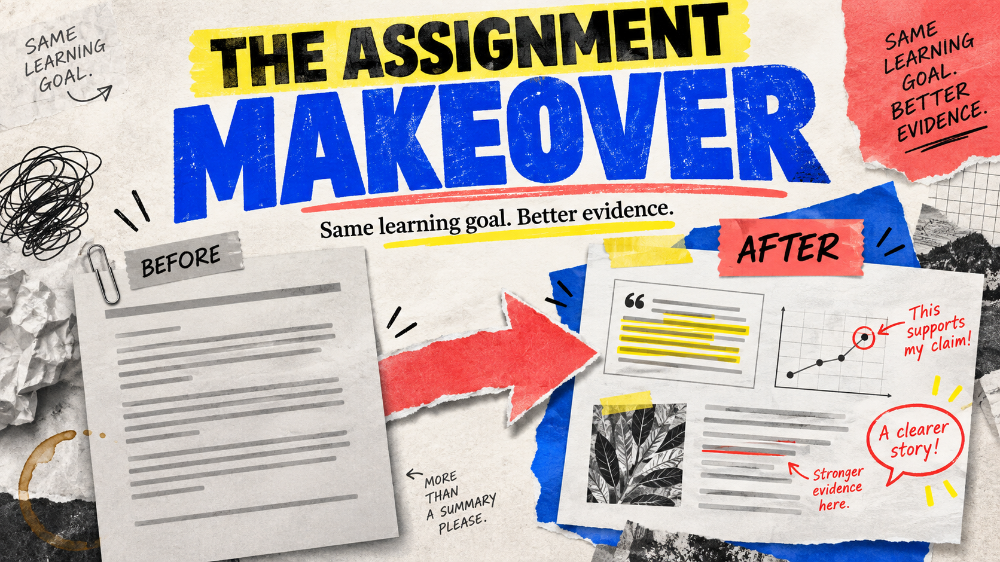

Issue 003
AI feedback is not AI grading
Let the tool suggest a comment. Let the student provide the evidence.
Read issue →A newsletter by Chad Wadden
Research, classroom ideas and ready-to-use resources for high-school teachers finding their way with AI.
The latest · Issue 003
Let the tool suggest a comment. Let the student provide the evidence.
Read the new issue →Issue 003
Let the tool suggest a comment. Let the student provide the evidence.
Read issue →
Issue 002
Three practical before-and-after upgrades for essays, science reports and coding tasks.
Read issue →Issue 001
A practical first step, a ten-minute activity and a check for understanding.
Read issue →Take it into your classroom
Issue 002 · Teacher planning kit
A ten-minute planning sheet, a worked redesign and instructions you can adapt for students.
Open the redesign kitIssue 001 · Classroom activity
A ten-minute reasoning exercise with fictional data, a flawed claim and worked answers.